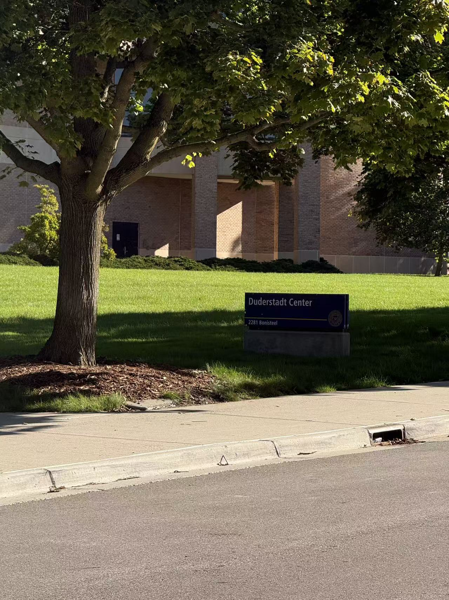
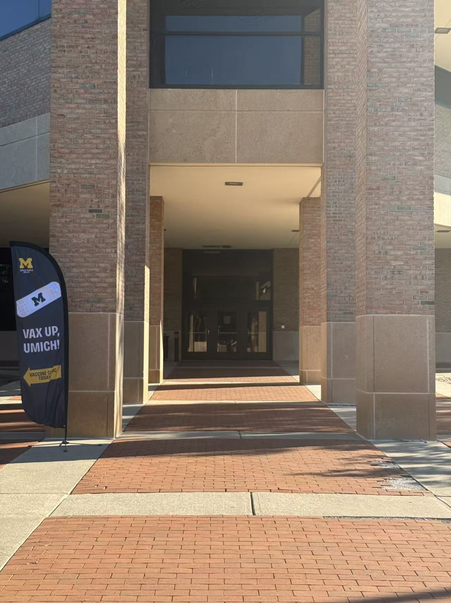
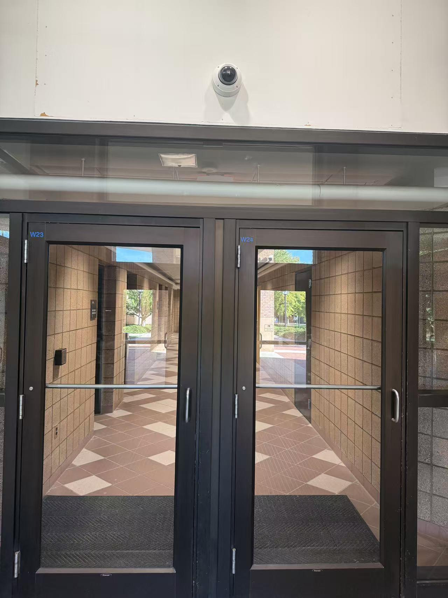
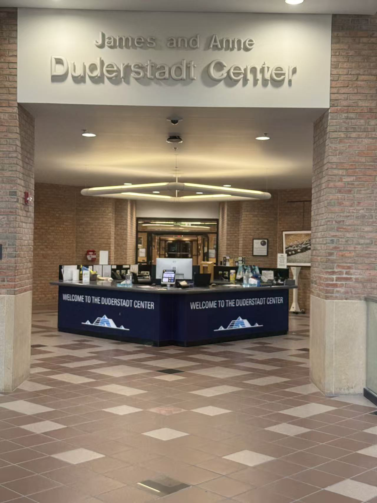
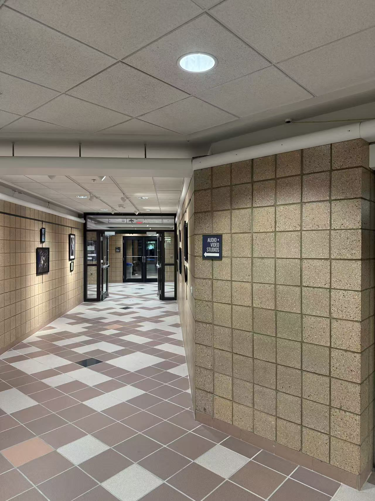
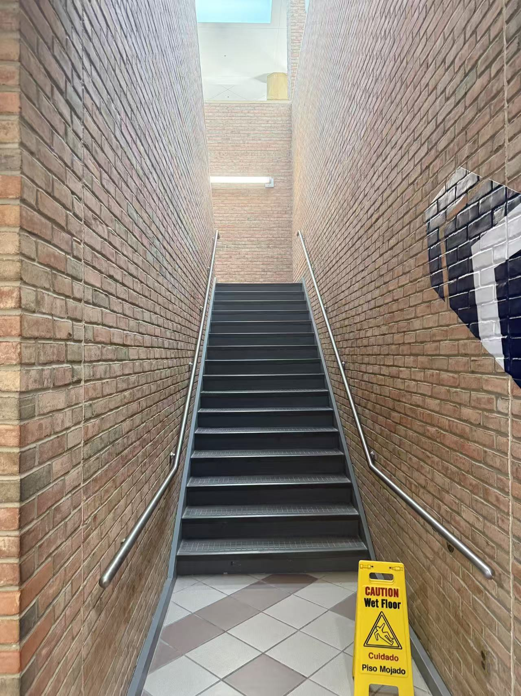
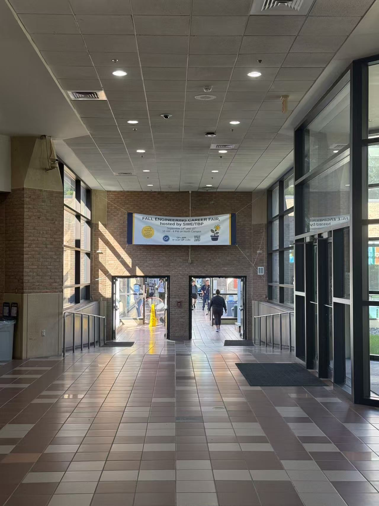
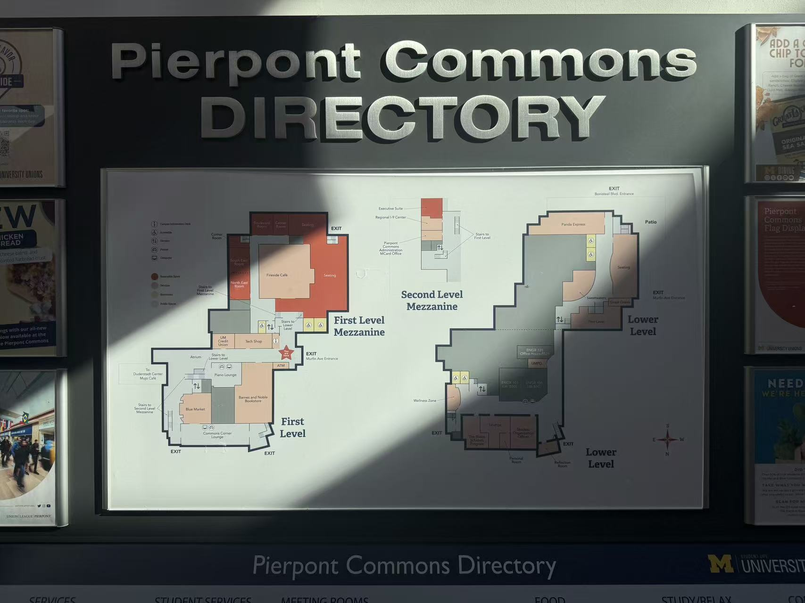

Wayfinding walk: Duderstadt Center and Pierpont Commons
· Week 4
I walked through the Duderstadt Center and then into the adjacent Pierpont Commons space to trace how wayfinding cues change from entry to orientation. The route is not confusing all the way through, but it does show an uneven distribution of information: some spaces are easy to read, while others depend on staff or a final directory map.
Experience Map
-
Identify Duderstadt Center
Action: See building sign.
Information: Building name.
Response: Location confirmed. -
Approach the entrance
Action: Walk toward the recessed entry.
Information: Spatial path.
Decision: Which entrance should I use? -
Enter through W23/W24 doors
Action: Enter the building.
Information: Door labels.
Response: Still need more orientation. -
Reach the welcome desk
Action: Look for help and orientation.
Information: Welcome desk.
Decision: Ask for help or continue independently. -
Follow directional signage
Action: Move through the corridor.
Information: Audio + Video Studios sign.
Response: Route becomes clearer. -
Encounter the staircase
Action: Stop and evaluate the route.
Decision: Go upstairs or stay on this level?
Response: Moment of uncertainty. -
Move through the connector corridor
Action: Continue forward.
Information: Limited signs.
Transition: Duderstadt to Pierpont. -
Reach the Pierpont Commons directory
Action: Read the directory.
Information: Full map and services.
Response: Arrival confirmed.
Photo log
Annotation: Location confirmed

The exterior sign confirms that I have reached the Duderstadt Center.
Annotation: Main path forward

The architecture guides me toward the entrance, even though there is limited directional information.
Annotation: Door numbers visible

The entrance doors are labeled, but the labels do not explain where they lead.
Annotation: Main information point

The welcome desk provides the clearest source of orientation after entering the building.
Annotation: Clear directional cue

The directional sign clearly identifies a destination and helps me decide where to go.
Annotation: Decision point

The staircase creates uncertainty because there is no nearby information explaining what is upstairs.
Annotation: Transition space

The long corridor connects spaces, but gives little confirmation that I am moving in the correct direction.
Annotation: Arrival confirmed

The Pierpont directory confirms arrival and provides detailed information about the next possible destinations.
Short observations
- Wayfinding information is unevenly distributed throughout the route.
- The welcome desk is the clearest orientation point in the Duderstadt Center.
- Some signs and labels exist, but they are not always useful for first-time visitors.
- Transition spaces, especially stairs and long corridors, create the most uncertainty.